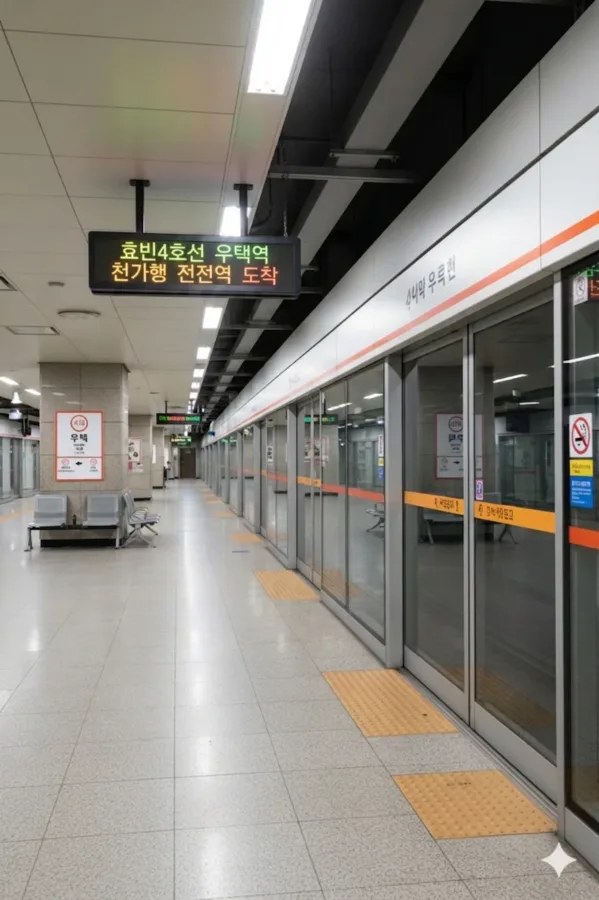

효빈 도시철도 4호선 416번 및 창전선 C13번(예정). 효빈광역시 청엽구 우택동 19 소재이다.
현재는 4호선 단일 역이나, 향후 **창전선** 1단계 구간이 개통되면 환승역이 될 예정이다. 4호선은 지하, 창전선은 지상(고가) 모노레일로 운행되어 입체적인 환승 구조를 띨 전망이다.
청엽구 우택동의 중심부에 위치한 역으로, 역 주변은 대규모 아파트 단지와 학교들이 밀집해 있는 전형적인 주거 지역이다. 덕분에 출퇴근 시간대와 등하교 시간대에 이용객이 상당히 많은 편이다.
2003년 4호선 개통과 함께 영업을 개시했으며, 개업 당시에는 주변이 다소 한산했으나 우택지구 개발이 완료되면서 현재는 청엽구 내에서도 알짜배기 수요를 자랑하는 역이 되었다. 역사는 지하 3층 구조로 이루어져 있으며, 대합실이 넓고 쾌적하게 조성되어 있다. 출구는 총 4곳으로, 사거리 각 방향으로 나 있어 접근성이 좋다.
추후 창전선이 개통되면 역 서쪽으로 지상 역사가 들어서며, 지하 대합실과 지상 역사를 잇는 환승 통로가 신설될 예정이다. 이로 인해 우택동 주민들은 4호선을 통한 도심 접근뿐만 아니라, 창전선을 통해 창전구 내부 및 동구 방면으로의 이동도 훨씬 편리해질 것으로 기대된다.
|
4
C
우택역 출구 정보
|
||
|---|---|---|
| 번호 | 주요 시설 및 방향 | 비고 |
| 1 | 우택원마을 | |
| 2 | 우택사거리 | |
| 3 | 원내초등학교 | |
| 4 | 우택초등학교, 우택동행정복지센터 | |
| 5 | 창전선 역사(공사중) | 신설 예정 |
| 우택역 이용객 통계 | ||
|---|---|---|
| 연도 | 일평균 이용객 | 비고 |
| 2020년 | 16,018명 | |
| 2021년 | 16,180명 | |
| 2022년 | 18,344명 | |
| 2023년 | 18,681명 | |
| 2024년 | 19,023명 | |

| 동덕현 ↑ | |||
| 하행 | ㅣ | ㅣ | 상행 |
| ↓ 치 구 | |||
| 상행 | 4 효빈 도시철도 4호선 (완행/급행) | 동덕현 · 장원 · 해운산업지구 방면 (장원역까지 각역정차) |
| 하행 | 4 효빈 도시철도 4호선 (완행/급행) | 치구 · 하가 · 천가 방면 (급행 정차) |
| 우택중앙 (예정) ↑ | ||||
| 하 | ㅣ | ㅣ | 상 | |
| ↓ 하성천 (예정) | ||||
| 상 | C 창전선 | 팔조 · 신창전 · 우택중앙 방면 |
| 하 | C 창전선 | 하성천 방면 (당역 종착) |
효빈광역시 시내버스 노선들이 주로 정차한다.
| 구분 | 정류소명 | 노선 번호 |
|---|---|---|
| 순방향 | 우택 | 18, 38, 40, 48, 88, 89, 181, 258, 292, 381, 481, 492, 781, 881, 891, 892, 우택01 |
| 역방향 | 우택(건너편) | 40-1, 81, 83, 84, 88-1, 98, 381, 528, 781, 811, 841, 881, 891, 892, 922, 942, 우택01-1 |